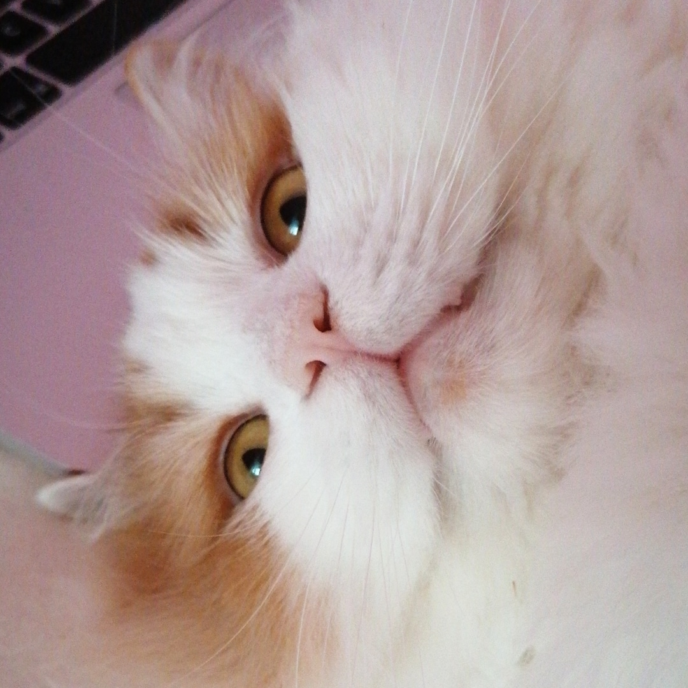

Omelette

breed:
Persian
age:
ca 6years
adoption date:
16.02.16
I adopted Omelette while I was living in Malta.
He was very good company, while I was feeling homesick.
Omelette's favourite spot in Malta was the balcony.
He used to bask in the Maltese sun for hours, with some snack breaks.
Now he is basically doing the same, but in Vienna.
breed:
Sibirian Mix
age:
ca 2years
adoption date:
05.03.2020
Since I work full time, I wanted to get a buddy for Omelette.
Originally I didn't want another long haired cat, because the fur is everywhere!
But then a friend of mine sent me a link to an adoption site.
They had the most beautiful little cat, with gorgeous eyes.
Those eyes are very special, because they don't work. Pepper is blind.
She gets around just fine though, and only occasionally bumps into things.